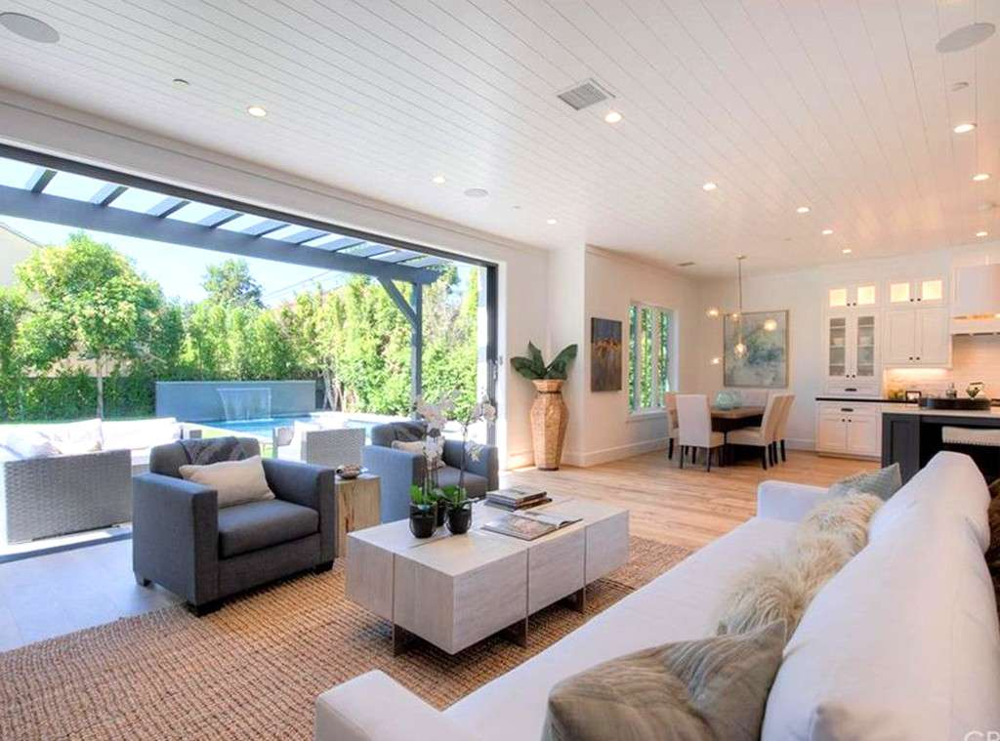

Tom Sandoval and Ariana Madix are moving on up!
The two lovebirds no longer have to turn off their air conditioner in order to use the microwave in their West Hollywood apartment, because they just purchased a $2 million home. Talk about a major upgrade!
Sandoval's longtime friend Douglas McFarland of ReDesign Real Estate and Design says helping his pal find his dream home"was a really great experience for us to share together."
McFarland tells E! News, "Tom has always looked as me as his secret weapon when it comes time to buy a house. We explored a lot of options in a lot of different areas (both fixers and new) and ultimately found that the quality and detail of this property was far superior than your typical turn and burn mc-mansion."
The $2 million home features five bedrooms and five-and-a-half bathrooms. Even better? Madix and Sandoval will soak up the sun come spring and summer because their mansion features an outdoor pool complete with a waterfall (OKUR).
It's a farmhouse-style property full of charm, which is the complete opposite vibe of the reality TV personality's TomTom bar.
Douglas shares the couple has "big plans for interior design/decor, including building out a bar for Tom."
The house is located in the Studio City/Sherman Oaks area, which isn't too far of a trek to Lisa Vanderpump's restaurants.
"It's still hard to believe that this actually happened," Tom's longtime friend says. "Suffice to say, this means a lot to me and I'm probably a bit more emotional of this one than normal. I can't put into words how proud I am of Tom and how much he deserves this for himself!"
It's only a matter of time before the Vanderpump Rules cast joins the couple for some lavish parties. Let's hope they capture it all on camera.